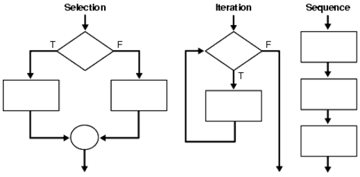

Một trong những yếu tố quan trọng và không thể thiếu của một chương trình là “việc điều khiển”, cụ thể là các cấu trúc điều khiển, cũng là thành tố kết hợp đồng thời giữa dữ liệu và tác vụ. Có thể hiểu, điều khiển trong lập trình là lựa chọn những câu lệnh nào sẽ thực hiện tiếp theo câu lệnh vừa thực thi. Cấu trúc điều khiển (Câu lệnh điều khiển) cho phép một lập trình viên xác định thứ tự thực thi các lệnh trong mỗi chương trình, thể hiện qua việc:
Cấu trúc điều khiển (Control Structure) là một trong các đặc trưng cơ bản của phương pháp lập trình cấu trúc. Trong đó, người ta sử dụng 3 cấu trúc điều khiển để tạo nên logic của chương trình. Mọi vấn đề về logic đều được giải quyết bằng cách phối hợp 3 cấu trúc: Cấu trúc tuần tự (Sequence structures), Cấu trúc chọn (Selection structures) và cấu trúc lặp (Iterative structures).
if(condition){ //code ở đây }
Condition hay điều kiện ở đây là một đoạn code hay một mệnh đề mà kết quả của nó trả về true/false. Ở đây, nếu condition mà trả về true thì sẽ thực thi đoạn code bên trong block code của if
let a = 5, b = 10; if(a < b) { console.log('a < b'); }
Với else thì hơi khác if một chút là muốn có else thì phải có if trước đó, tức là khi điều kiện của mệnh đề if trước nó không đúng thì câu lệnh else mới được thực thi
if(condition) { // condition = true thì code ở đây sẽ chạy } else { // condition = false thì code ở đây sẽ chạy }
Ví dụ:
let a = 5, b = 10; if(a > b) { console.log('a > b'); } else { console.log('a <= b'); } // --> result: a <= b
Với ví dụ trên thì ta vẫn chưa biết được chính xác khi nào a = b và khi nào a < b. Vì vậy ta có thể lồng các câu lệnh if else vào nhau để có thể cover hết các trường hợp có thể xảy ra
let a = 5, b = 10; if(a > b) { console.log('a > b'); } else { if(a === b) { console.log('a = b'); } else { console.log('a < b'); } }
Ta có thể rút gọn câu lệnh if else bằng cách sử dụng toán tử 3 ngôi
Điều kiện ? block code 1 : block code 2
Nếu điều kiện đúng thì thực hiện block code 1, ngược lại thì thực hiện block code 2
let a = 2; a % 2 == 0 ? console.log("a là số chẵn") : console.log("a là số lẻ")
switch...case hay còn được gọi là câu lệnh rẽ nhánh, nó thường được dùng để giải quyết các bài toán có các điều kiện cố định, cấu trúc của nó như sau:
switch(condition) { case value 1: //block code break; case value 2: //block code break; case value 3: //block code break; default: //block code break; }
Ví dụ:
let a = 5; switch(a) { case 0: console.log("Không"); break; case 1: console.log("Một"); break; case 2: console.log("Hai"); break; case 3: console.log("Ba"); break; case 4: console.log("Bốn"); break; case 5: console.log("Năm"); break; default: console.log("Không thỏa mãn"); break; } //--> result: Năm
Một trong những cấu trúc điều khiển trong javascript thường hay dùng là lệnh lặp for. Lệnh này dùng để lặp một đoạn code với số lần lặp xác định. Cú pháp lệnh lặp for như sau:
for (khởitạo ; điềukiện ; bướctăng) { //thực hiện }
Ví dụ:
for (let t = 0; t <= 12; t++) {
document.write('Tháng ' + t + '
');
}
Lệnh for có thể dùng để duyệt qua một mảng:
<div class="ductinh"> <script> document.write( "<h4>CÁC ĐỨC TÍNH CAO QUÝ CỦA CON NGƯỜI</h4>"); var qt = ["Nhân", "Lễ", "Nghĩa","Trí","Tín" ]; for (var i = 0; i < qt.length; i++) { document.write( "<p>" + qt[i] + "</p>"); } document.write("<hr>"); </script> </div>
Lệnh lặp while trong javascript dùng để thực hiện lặp đi lặp lại đoạn code khi điềukiện là còn đúng, lệnh while sẽ dừng khi điềukiện là sai. Điềukiện được kiểm tra trước khi đoạn code được thực hiện.
while (điềukiện ) { //Code thực hiện lặp lại khi điềukiện là đúng }
Ví dụ:
<script> var n = 1; while ( n <= 31) { document.write(n + " "); n++; //thay đổi giá trị của n để đến 1 lúc điều kiện sẽ sai } </script>
Chú ý: phải tính toán để điều kiện sẽ đến lúc sai, nếu không sẽ bị lỗi lặp vô hạn.
Try - Catch là cấu trúc không còn xa lạ gì trong các ngôn ngữ lập trình như C#, và trong Javascript cũng cung cấp cho chúng ta cú pháp này để xử lý và xuất ra thông báo lỗi.
try { // Quăng lỗi ra throw("Noi dung loi"); } catch (e){ // Đón nhận lỗi và in ra // Vị trí này chỉ chạy khi ở try có quăng lỗi hoặc ở try // sử dụng sai cú pháp ... console.log(e.message); } finally{ // Cuối cùng chạy cái này // Luôn luôn chạy sau cùng console.log('End of try cache'); }
Câu lệnh try chứa một khối try, chứa một hay nhiều câu lệnh ({} phải luôn được sử dụng, cũng cho các câu lệnh đơn), và ít nhất một mệnh đề catch hoặc mệnh đề cuối cùng, hoặc cả hai. Nghĩa là, có ba dạng của câu lệnh try: 1. try...catch 2. try...finally 3. try...catch...finally Mệnh đề catch chứa các câu lệnh xác định phải làm gì nếu một ngoại lệ bị ném trong khối try. Đó là, bạn muốn thử khối để thành công, và nếu nó không thành công và bạn muốn kiểm soát để vượt qua đến khối catch. Nếu bất kỳ câu lệnh nào trong khối try (hoặc trong một hàm được gọi là từ bên trong khối try) sẽ ném ra một ngoại lệ, điều khiển ngay lập tức chuyển sang mệnh đề catch. Nếu không có ngoại lệ được ném vào khối try, mệnh đề catch được bỏ qua.
Mệnh đề finally thực hiện sau khi khối try và catch clause (s) thực hiện nhưng trước các câu lệnh sau câu try. Nó luôn luôn thực hiện, bất kể một ngoại lệ đã được ném ra hay bị bắt.
Có thể xếp một hoặc nhiều câu lệnh try. Nếu một khối try bên trong không có một điều khoản bắt, mệnh đề catch câu lệnh đóng của câu lệnh đã được nhập.
Như vậy vị trí finally sẽ luôn luôn được thực thi và sẽ thực thi cuối cùng. Với finally có thể sử dụng hoặc không đều được. Riêng trong catch sẽ có một tham số truyền vào và tham số này sẽ chứa thông tin của lỗi và ta sử dụng biến này để lấy message.
Ví dụ: Sử dụng biến chưa định nghĩa, nếu bình thường thì chương trình bị dừng nhưng do ta sử dụng try - catch nên chương trình vẫn hoạt động bình thường.
try { // Sử dụng biến message chưa được định nghĩa console.log(message); } catch (e){ console.log(e.message); }
Ví dụ: Sử dụng sai cú pháp nhưng chương trình vẫn chạy
try { fadsfas fasdfas fsda } catch (e){ console.log(e.message); } finally{ console.log('End'); }
Chương trình này nếu chạy lên thì xuất hiện dòng chữ 'fadsfas is not defined' và đoạn code trong finally vẫn hoạt động bình thường, điều này chứng tỏ chương trình không bị dừng.
Để tiện cho việc quản lý lỗi thì thông thường chúng ta sẽ viết một lớp thông báo lỗi, ví dụ dưới đây dùng để quản lý việc thông báo lỗi cho người dùng.
function UserError(){ this.throwLogin = function(){ throw new Error('Invalid username and password'); }; this.throwSession = function(){ throw new Error('Your request is timeout'); }; return this; }
Để sử dụng thì chúng ta làm như sau:
var username = 'thehalfheart'; var password = 'admin@'; try { if (username !== 'admin' || password != 'admin@'){ var UserError = new UserError(); UserError.throwLogin(); } }catch (e){ console.log(e.message); }
Mệnh đề cuối cùng chứa các câu lệnh để thực hiện sau khi khối try và catch clause (s) thực hiện. Lưu ý rằng mệnh đề cuối cùng thực thi bất kể có ngoại lệ được ném ra hay không. Ngoài ra, nếu một ngoại lệ được ném ra, các câu lệnh trong mệnh đề cuối thực hiện ngay cả khi không có điều khoản bắt giữ các ngoại lệ. Bạn có thể sử dụng mệnh đề cuối cùng để làm cho kịch bản của bạn không thành công khi một ngoại lệ xảy ra; ví dụ: để thực hiện công việc dọn dẹp chung, bạn có thể cần phải giải phóng một tài nguyên mà tập lệnh của bạn đã buộc.
Ví dụ sau mở tệp và sau đó thực hiện các câu lệnh sử dụng tệp (phía máy chủ JavaScript cho phép bạn truy cập tệp). Nếu ngoại lệ được ném ra trong khi tệp mở, mệnh đề cuối cùng sẽ đóng tệp trước khi tập lệnh không thành công. Đoạn mã cuối cùng cũng được thực hiện khi trả về rõ ràng từ try hoặc catch block.
openMyFile(); try { // tie up a resource writeMyFile(theData); } finally { closeMyFile(); // always close the resource }
Nếu khối cuối trả về một giá trị, giá trị này trở thành giá trị trả lại của toàn bộ sản phẩm try-catch-finally, bất kể giá trị trả về nào trong các khối try và catch. Điều này bao gồm các trường hợp ngoại lệ được ném vào bên trong khối catch:
(function() { try { try { throw new Error('oops'); } catch (ex) { console.error('inner', ex.message); throw ex; } finally { console.log('finally'); return; } } catch (ex) { console.error('outer', ex.message); } })(); // Output: // "inner" "oops" // "finally"